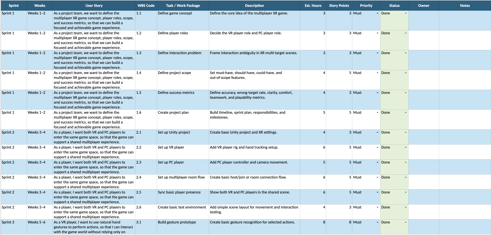

Kaiju Corp.
An asymmetric VR + PC game exploring gaze and gesture interaction, developed by VGS Studio. Currently in active production with a target delivery of August 2026.
Recent playtest footage.
Project Introduction
Kaiju Corp. is a self-directed asymmetric multiplayer game developed by VGS Studio. A VR player controls a kaiju through gaze and hand gestures, while PC players move through the environment, fight back, and pursue their own objectives.
As Project Manager and Producer, I lead iterative planning, scope management, team coordination, playtesting, and external art collaboration. The project is currently in active production and is scheduled for delivery in August 2026.
Role & Responsibilities
As Project Manager and Producer, I help the team structure an experimental multiplayer game into a deliverable production. That means defining scope, managing uncertainty, and keeping the August delivery target in focus.
Production and Scope Management
Roadmap, milestones, sprint structure, and backlog. Scope reviewed each cycle against player value, team capacity, and technical risk. Priorities updated through retrospectives and playtest findings.
Team and Production Coordination
Stand-ups, sprint planning, and retrospectives. Tracked ownership, blockers, and next actions across all disciplines. Turned discussions and ideas into clear production tasks.
External Art Collaboration
Managed external art contributors alongside the core production schedule. Matched tasks to availability and strengths. Tracked creation, revision, approval, and Unity integration as separate stages.

Work Breakdown Structure — full overview

Work Breakdown Structure — detailed breakdown
Production Journey

Jira Sprint Board

Physical Time Schedule Board
Define the Core Interaction
Project kickoff
Clarified project direction, defined measurable goals, and established gaze and gesture as the core interaction focus while keeping voice interaction outside the main scope.
Build the Multiplayer Foundation
Early development
Organized features into sprint goals, tracked dependencies between networking and gameplay systems, and protected time for integration rather than only isolated feature development.
Test and Refine the Interaction
Prototype testing
Structured the test process, defined observation criteria, assigned team responsibilities, synthesized findings, and translated meaningful patterns into production priorities.
Reassess and Replan
Iterative review
Kept the backlog, milestones, and priorities responsive to evidence while ensuring the team remained aligned with the August delivery target.
Integrate the Full Experience
Integration + delivery
Coordinating feature readiness and art integration, separating asset creation from Unity implementation, and prioritizing work required for external playtesting and final delivery.
Challenge → Response → Current Outcome
Kaiju Corp. combines experimental interaction design with a full multiplayer game production. As Project Manager and Producer, my focus is to give the team enough flexibility to test and learn while maintaining the structure needed to deliver a cohesive experience in August.
Managing Iterative Production
Prototype results and player feedback regularly shift what's reliable and realistic. A fixed plan becomes outdated quickly.
Two-week cycles with retrospectives and backlog reviews. New ideas are assessed against player value, effort, and risk before becoming committed tasks.
The team stays flexible without losing direction. The August target anchors every planning decision.
Protecting Scope in a Self-Directed Project
A self-directed team generates many ideas. A four-person team is simultaneously building an experimental interaction system and a full multiplayer game.
I separate the core playable loop from exploratory ideas. New proposals are assessed against team capacity, dependencies, and timeline before becoming commitments.
Exploration continues while the playable loop anchors scope and priority decisions.
Coordinating External Art Collaborators
External contributors work outside the core sprint schedule, each with different availability and capacity.
Assignments are self-contained and matched to each contributor's strengths. Each task includes clear references, ownership, and review points. Creation, revision, approval, and Unity integration are tracked separately.
Contributors work to flexible commitments while the core team maintains visibility over asset progress and integration readiness.
What I Carry Forward
01
Iteration Needs Structure
Iterative work still needs a stable framework. Clear cycles, retrospectives, and milestones let the plan evolve without the team losing its direction.
02
Scope Is an Ongoing Decision
Scope needs continuous review in an experimental project. My role is to protect the team's ability to deliver while keeping space for exploration.
03
Flexible Collaboration Requires Clear Boundaries
External contributors need clear ownership, references, and review points, not the same workflow as the core team. Flexible collaboration works when contribution boundaries are explicit.
Currently in Active Production
The multiplayer foundation is in place and the core interaction system is being refined. Next up: strengthening the playable loop, external testing, and art integration.